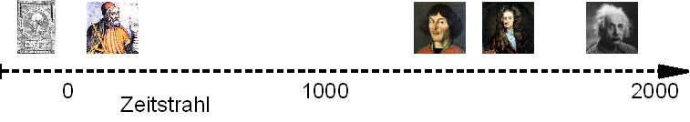
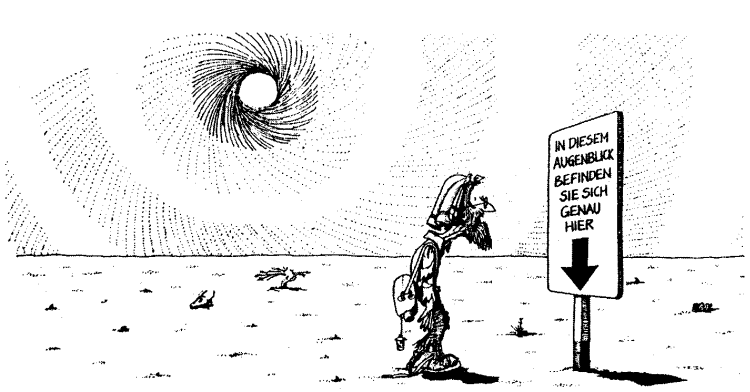

Die Vermessung der Welt
Im Lernobjekt Der Raum in GI-Systemen, ist das kartesische Koordinatensystem zur Abbildung des euklidischen Raums eingeführt worden. Zentrale Aufgabe eines Koordinatensystems ist die räumlich reproduzierbare Verortung diskreter und/oder kontinuierlicher Elemente geographischer Information. Eine grundlegende Eigenschaft aller GIS-Software sind Methoden, die das geographische Datentripel Zeit, Ort und Attribut konsistent nutzbar machen.
Die Lerneinheit Vermessung der Erde ist für ein schrittweises Erarbeiten dieser komplexen Materie in mehrere Lernobjekte gegliedert. Zunächst werden die Prinzipien der räumlichen Referenzierung (Georeferenzierung) mit Hilfe von Ortsnamen, die lineare Referenzierung und das exakte zweidimensionale Verorten in einem Katastersystem besprochen. Im Anschluss werden die wichtigsten geodätischen bzw. kartographischen Methoden der Raumzuweisung und -darstellung wiederholt und in den Kontext von GI-S gestellt.
Die Zeit
Zunächst beginnen wir jedoch mit der Zeit. Sie stellt in weiten Teilen der Welt ein einheitlich strukturiertes Zuordnungssystem dar. Konkret heißt das: Wir haben ein System von Zeitzonen und eine allgemein anerkannte (Konvention) Datumsgrenze. Innerhalb der Zeitzonen wird die Zeit als lineares Kontinuum aufgefasst (vgl. Abb. 24). Selbst die Verwendung anderer Kalender, die eventuell abweichend benannt und gezählt werden, kann linear auf die uns vertrauten Weltzeitzonen umgerechnet werden. Das liegt in der physikalisch Auffassung begründet, das Zeit (mit Ausnahme archaischer oder mythischer Zeitvorstellungen) ein lineares Bezugssystem darstellt. Auf einen Zeitpunkt folgt kontinuierlich der Nächste. Wir müssen schon Einstein's Theorien bemühen um die Linearität der Zeit zu aufzulösen. Für die mit Hilfe von GI-Systemen möglichen Betrachtungsskalen ist Die Verwendung eines linearen Zeitverständnisses unproblematisch, jedoch, anders als die Abbildung des Raums, implizit implementiert (bzw. optional). Daher werden wir uns nachfolgend um die erheblich komplexere Integration der räumlichen Konzepte bemühen.

Abbildung 24: Der Zeitstrahl als Repräsentation einer linearen Zeitauffassung hier am Beispiel der jeweiligen Schaffensperiode einiger für die Geographie wichtigen Wissenschaftler (GIS.MA 2009)Der Ort
Ohne eine exakte Verortung beliebiger Orte ist ein GIS weitgehend sinnlos, da wir dann nicht in der Lage sind räumlich zu messen, Eigenschaften räumlich zu vergleichen oder auch nur die Merkmale spezifischer Objekte geographisch darzustellen(Abb. 24). Für den sinnvollen Gebrauch von GI-Systemen ist die korrekte Verortung der Geoobjekte -oder anders ausgedrückt- die Georeferenzierung eine zentrale Technik. Es gibt eine Reihe von ähnlichen Ausdrücken für diesen Vorgang. Wir sprechen vom Georeferenzieren, Geolozieren, Verorten oder ganz modern vom Geotagging. Allen Begriffen ist gemeinsam, dass Merkmalsausprägungen an geographisch identifizierbare und kartographisch abbildbare Positionen gebunden werden.

Abbildung 25: Wo bin ich - genau hier. In GI-Systemen benötigen Orte im Raum, einen externen Bezug und benötigt hierzu Koordinaten (Astro-AG)Lernziele
- Sie lernen namentliche, lineare und räumliche Referenzierungsmethoden unterscheiden
- Sie können Geokoordinaten und projizierten Koordinaten unterscheiden
- Sie lernen geeignete Projektionssysteme zu auszuwählen und zuzuweisen